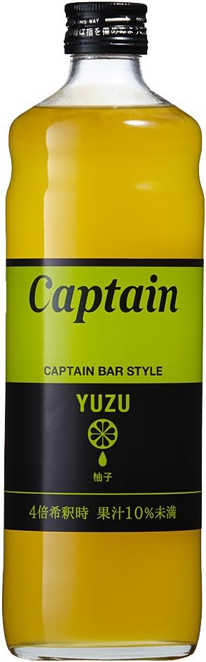

炭酸水は、買うものだと思っていた。箱で届いて、飲み終えたペットボトルが玄関に積み上がる——あの光景に慣れきっていた頃に、ソーダストリームを家に置いた。そして3か月ほど炭酸水を作り続けた末に、思わぬ副産物としてたどり着いた飲み方がある。この記事はその話だ。
炭酸水を「作る」という発想に切り替える
ソーダストリーム スピリット（SSM1068）は、専用のガスシリンダーを使って水道水やミネラルウォーターをその場で炭酸水に変える、電源不要の炭酸水メーカーだ。ボトルをセットしてボタンを押すだけ。数秒で目の前の水がシュワシュワと泡立つ。
最初に効いてくるのは、ペットボトルを買わなくなることだ。飲みたいときに、飲みたい分だけ、その場で作る。重い箱を運ぶことも、飲み終えた容器をゴミに出すこともなくなる。冷蔵庫の中で炭酸水の在庫を気にする感覚そのものが消える。
ソーダストリーム スピリットとは
ソーダストリームのスタンダードモデルにあたるのがスピリットだ。電源も電池も不要で、キッチンのどこにでも置ける。スターターキットにはマシン本体・専用ボトル・60L用ガスシリンダーが同梱され、届いたその日から炭酸水を作り始められる。
主要スペック
| タイプ | 手動式 炭酸水メーカー（電源・電池不要） |
|---|---|
| セット内容 | マシン本体・専用ボトル1本・60L用ガスシリンダー1本（スターターキット） |
| ガス1本の目安 | 約60L分の炭酸水（使用状況・炭酸の強さで変動） |
| 炭酸の強さ | プッシュ回数で微炭酸〜強炭酸まで調整可能 |
| ボトル | 専用ボトル（食洗機不可・繰り返し使用可） |
| ガス交換 | 空シリンダーは対応店舗・公式サイトで交換購入 |
| 型番 | SSM1068 |
| 参考価格 | 約9,900円（スターターキット） |
使ってわかった、3つのこと
1. 炭酸の強さを自分で決められる
市販の炭酸水は「強炭酸」か「そうでないか」の二択に近いが、スピリットはボタンを押す回数で炭酸の強さを自分で決められる。軽く炭酸を感じたい朝はプッシュ少なめ、ガツンと来てほしい夜は多め。同じ1台で、その日の気分に合わせて刺激を調整できるのは、作る炭酸水ならではだ。
2. ランニングコストは「使い方次第」で効いてくる
ガスシリンダー1本でおよそ60L分。毎日のように炭酸水を飲む家庭ほど、ペットボトルを都度買うより割安になりやすい。ただし炭酸を強めにするほどガスの減りは早くなるので、「60L」はあくまで目安として捉えておきたい。交換用シリンダーの入手ルート（対応店舗や公式サイト）を最初に確認しておくと、運用が安定する。
3. 置き場所を選ばない
電源コードがないので、コンセントの位置に縛られない。キッチンの隅でも、ダイニングのテーブル脇でも置ける。マットな質感の本体は主張が強すぎず、出しっぱなしにしても生活感が出にくい。個人的には、この「常に手が届く場所に置ける」ことが、炭酸水を作る習慣が続いた一番の理由だと感じている。
そして、炭酸割りの行き着いた先が「ゆず割り」だった
炭酸水を自分で作れるようになると、次に始まるのが「何で割るか」の実験だ。果汁、コーヒー、お茶——ひと通り試した中で、家族にいちばん定着したのが柚子シロップを炭酸で割った一杯だった。市販の柚子系ドリンクを買うのではなく、自分で作った炭酸に好きな濃さでシロップを落とす。この最後の一手で、ソーダストリームの使い道がぐっと広がった。

Captain 柚子シロップ 600ml で作る、自家製ゆず割り
喫茶店やバーの割り材でおなじみ「Captain（キャプテン）」シリーズの柚子シロップ。4倍希釈が目安の濃縮タイプなので、作りたての炭酸水に少量落とすだけで、柚子の香りが立った一杯になる。炭酸の強さもシロップの濃さも自分で決められるのが、作る炭酸ならではの楽しさだ。
そのまま炭酸で割ればノンアルの柚子ソーダに。個人的におすすめしたいのは、焼酎のソーダ割りにこの柚子シロップを少し足す飲み方。いつものチューハイに柚子の香りがのって、家飲みの一杯が少し特別になる。甘さは入れる量で調整できるので、控えめから始めて好みを探ってみてほしい。
※20歳未満の飲酒は法律で禁止されています。お酒に加える飲み方は成人の方のみ、適量でお楽しみください。
正直に書く、気になる点
- ガスシリンダーは消耗品で、交換の手間とコストがかかる。
使い切ったシリンダーは対応店舗や公式サイトで交換購入する必要がある。近くに取扱店があるか、購入前に確認しておくと安心だ。 - 炭酸を注入できるのは基本的に水のみ。
ジュースやお茶を直接ボトルに入れて炭酸化するのは推奨されていない。割り物は「炭酸水を作ってから後入れ」が基本になる。柚子シロップも、できあがった炭酸水に後から加える。 - 専用ボトルには使用期限がある。
ボトルは消耗品扱いで、長く使う場合は買い替えが前提になる。食洗機は使えない点も含め、扱いには少し気を配りたい。
こんな人に向いている
炭酸水をよく飲む人、ペットボトルの買い置きやゴミを減らしたい人、炭酸の強さを自分で調整したい人、家飲みの割り材を自分で作って楽しみたい人には特に向いている。電源不要でキッチンに常設できるので、「思い立ったときにすぐ作れる」環境が習慣として続きやすい。
総評
ソーダストリーム スピリットは、炭酸水を「買うもの」から「作るもの」へと切り替えてくれる一台だ。ボタンひとつで作れる手軽さ、置き場所を選ばない気軽さ、そして炭酸の強さを自分で決められる自由度。この自由度があるからこそ、柚子シロップのゆず割りのような「自分だけの一杯」にたどり着ける。
まずは炭酸水そのものを楽しみ、慣れてきたら割り材で遊んでみる。Captain 柚子シロップのゆず割り、そして焼酎のソーダ割りへのひと足しは、その入り口としておすすめしたい飲み方だ。炭酸を作る楽しさが、そのまま毎日の一杯の楽しさに変わっていく。